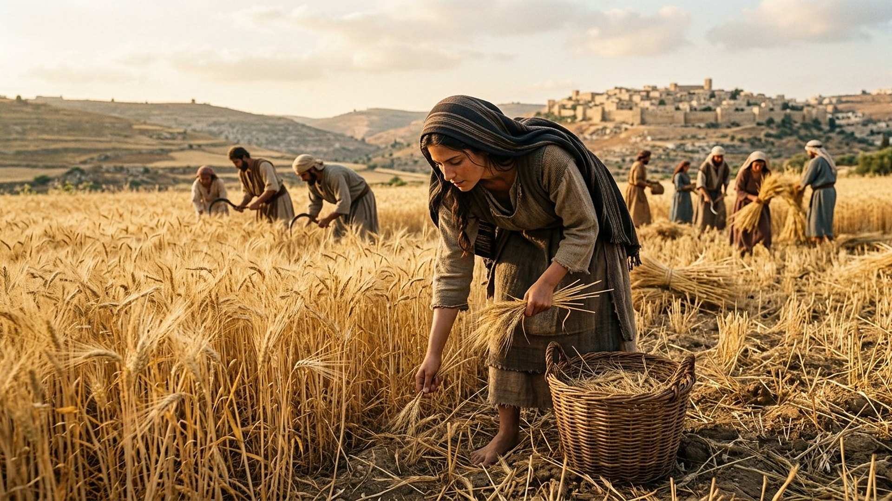
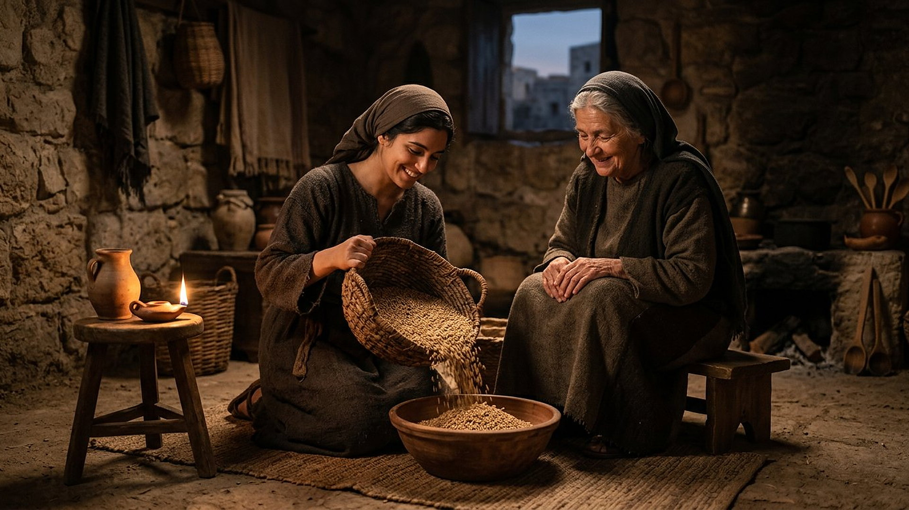

Salle 50 — Livre de Ruth ACCOMPLIE
Ruth : la loyauté qui entre dans la lignée
« Ne me presse pas de te laisser, de retourner loin de toi ! Où tu iras, j'irai ; où tu demeureras, je demeurerai ; ton peuple sera mon peuple, et ton Dieu sera mon Dieu. » — Ruth 1:16 (d'après Segond 1910)
Reconstitution numérique — le retour vers Bethléem : Naomi soutenue par Ruth sur la route des collines (Ruth 1:19).
Une étrangère au seuil de l'histoire d'Israël
Au temps des Juges, une famine pousse Élimélec (en hébreu, translittération : ʾĔlîmelek), de Bethléem en Juda (translittération : Bêṯ-Leḥem, « maison du pain »), à se réfugier au pays de Moab (translittération : Môʾāḇ) avec sa femme Naomi (translittération : Nāʿŏmî) et leurs deux fils. Le père meurt, puis les deux fils, qui avaient épousé des Moabites, Orpa et Ruth. Restée seule, Naomi décide de rentrer à Bethléem et pousse ses belles-filles à refaire leur vie. Orpa (translittération : ʿOrpāh) repart ; Ruth (translittération : Rûṯ) refuse et prononce le serment qui donne son titre à cette salle : « ton peuple sera mon peuple, et ton Dieu sera mon Dieu. » À Bethléem, la jeune veuve étrangère glane dans le champ de Boaz (translittération : Bōʿaz), parent de la famille, qui la remarque, la protège et, au terme d'une démarche réglée à la porte de la ville, devient son « rédempteur » familial : leur fils Obed (translittération : ʿÔḇēḏ) sera le grand-père du roi David (Ruth 1 à 4, résumé sobre).
Dans la lecture retenue par ce musée, ce court récit de moissons et de parenté est une charnière de la grande lignée : Matthieu ouvrira son évangile en inscrivant « Boaz, de Ruth » dans la généalogie de Jésus, aux côtés de Rahab la Cananéenne, entre étrangères devenues ancêtres du roi promis (Matthieu 1:5). La date de rédaction du livre et l'ancienneté de son cadre sont présentées ci-dessous en DÉBATTU, sans forcer le dossier.
Le récit en cinq temps
De la famine de Bethléem à la naissance d'Obed, avancez d'une station à l'autre.

Le banc des preuves : des fragments de Qumrân, une rédaction débattue
DÉBATTU
Les fragments de Ruth de la grotte 2 (2Q16-2Q17) : un texte lu dès l'Antiquité (EV-59)
La grotte 2 de Qumrân a livré de petits fragments hébreux du livre de Ruth, catalogués 2Q16 et 2Q17 et conservés dans les collections publiques de Jérusalem. Ils attestent que ce court livre circulait et était recopié avant le tournant de notre ère, au même titre que les grands livres. Débattu : la date de rédaction du récit lui-même — cadre situé « au temps des Juges », mais composition placée par beaucoup de spécialistes après l'exil — et la part d'histoire et de récit construit dans la généalogie finale qui mène à David.
LECTURE PROPHÉTIQUE
Une Moabite dans la généalogie du Messie
Le livre se referme sur une liste : Perets, Hetsron, Ram, Amminadab, Nahchon, Salmon, Boaz, Obed, Isaï (translittérations usuelles des noms hébreux), David (Ruth 4:18-22). Matthieu reprend ce maillon en y ajoutant la mère : « Salmon engendra Boaz de Rahab ; Boaz engendra Obed de Ruth » (Matthieu 1:5, d'après Segond 1910). Dans la lecture du musée, la prescience de la lignée passe ici par une veuve étrangère sans ressources : ni naissance illustre, ni calcul, mais une loyauté choisie sur une route.
DONNÉE HISTORIQUE
Glaner, un droit des pauvres inscrit dans la loi
Le glanage de Ruth n'est pas un décor pittoresque : la loi mosaïque ordonnait de laisser les coins du champ et les épis tombés « pour le pauvre et pour l'étranger » (Lévitique 19:9-10, résumé sobre). L'institution du parent-rédempteur (en hébreu, translittération : gōʾēl), qui peut racheter la terre et perpétuer le nom d'un proche décédé, relève du même droit familial. Le récit montre ces institutions à l'œuvre à l'échelle d'un village, ce que les historiens du droit comparent aux pratiques du Proche-Orient ancien sans pouvoir en dater chaque détail.
Quatre clés pour bien lire le livre de Ruth
1. La loyauté avant la parenté du sang
Le mot du livre est l'attachement fidèle : Ruth s'attache à Naomi, Boaz loue cette fidélité envers les morts comme envers la vivante, et les anciens bénissent la nouvelle maison. Le serment de Ruth ne lui promettait ni champ ni mari : sur la route, elle choisit un peuple et un Dieu sans garantie visible — la loyauté y est un acte libre, non un héritage.
2. Une étrangère accueillie, sans effacer son origine
Le récit appelle Ruth « la Moabite » jusqu'au bout, y compris dans la généalogie finale (4:17, 22) : son origine n'est ni niée ni un obstacle levé en passant. Moab descendait pourtant d'un peuple souvent hostile à Israël ; le livre fait d'une de ses filles l'arrière-grand-mère de David, comme Matthieu fera d'elle un maillon assumé de la lignée du Christ — écho de la miséricorde sans frontière de Jonas (salle 49).
3. Le « rachat » à taille humaine, image du grand
Boaz « rachète » la parcelle d'Élimélec et prend Ruth pour que « le nom du mort ne soit pas retranché » (4:10) : en hébreu, c'est le vocabulaire du gōʾēl, le parent qui délivre en payant le prix. Le musée signale la résonance avec le langage du rachat de la salle 44, tout en laissant chaque texte à son échelle : ici un champ et un nom de famille, là une vie donnée pour beaucoup.
4. Une providence qui travaille en coulisses
Le narrateur note que Ruth arriva « par hasard » dans la part de champ de Boaz (2:3, d'après Segond 1910) — un hasard dont chaque lecteur voit la trame : la famine rentre « au début de la moisson des orges » (1:22), Naomi retrouva « maison du pain » affamée et la quitte nourricière d'un petit-fils. Le livre ne montre ni voix du ciel ni miracle nommé : la prescience y avance masquée, par des rencontres et des lois déjà en place.
Prescience n'est pas fatalité — la route choisie à la frontière
À la frontière de Moab, les deux belles-filles pleurent, l'une repart librement, l'autre s'attache librement. Rien n'obligeait Ruth : pas d'oracle, pas de menace, seulement la connaissance du Dieu Naomi. La lignée qui mènera à David — et, dans la lecture du musée, au Messie — passe par ce choix consenti, non par un destin imposé.

Salle 47 : la loi qui protège la glaneuse · Salle 44 : du rachat familial au grand rachat · Salle 49 : la miséricorde au-delà des frontières
Écouter la salle
Transcription de la narration
Bienvenue dans cette salle du musée. Vous allez découvrir deux femmes marchant au lever du soleil sur une route de collines, une jeune glaneuse dans un champ d'orge doré, puis le grain versé le soir dans une humble maison de Pierre. Bonne visite. La visite avance en cinq étapes courtes. Prenez le temps d'observer chaque image et de lire les panneaux : ils présentent un choix célèbre, de petits fragments anciens retrouvés près de la mer Morte, et les questions des spécialistes. Merci.